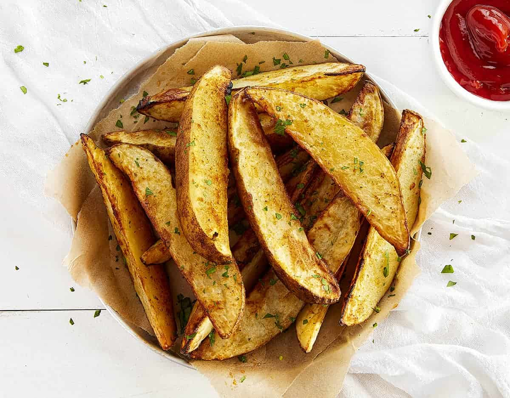

Classic Potato Wedges

Servings: 4 people

Prep Time: 10 minutes

Cook Time: 35 minutes
These crispy, seasoned potato wedges are a perfect side dish or snack. They are easy to make and deliciously satisfying, with a soft interior and crunchy exterior.
Did you know? Potato wedges, often considered a modern twist on the traditional fry, were actually a clever invention to reduce waste. In the 1970s, a fast-food chain started cutting potatoes into wedges to use the entire potato, minimizing scraps and maximizing deliciousness!